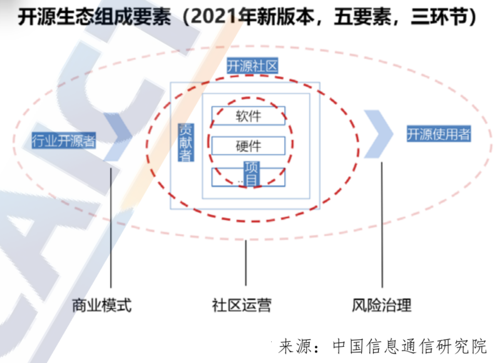
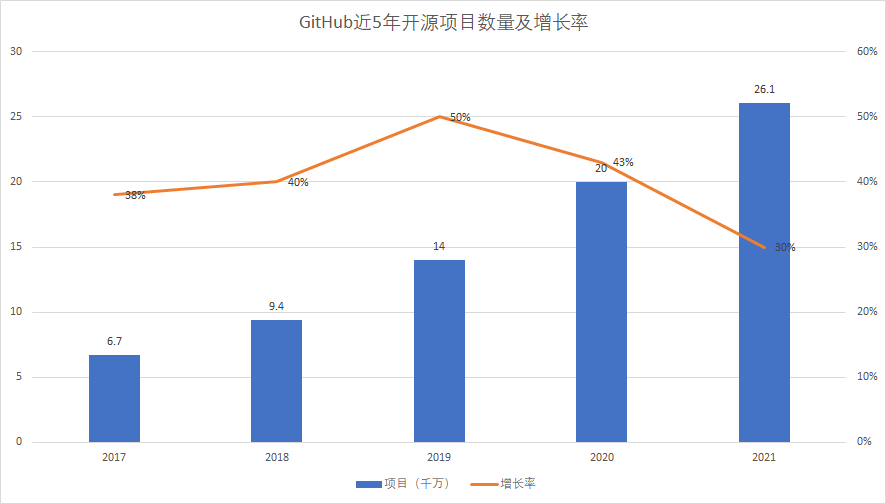
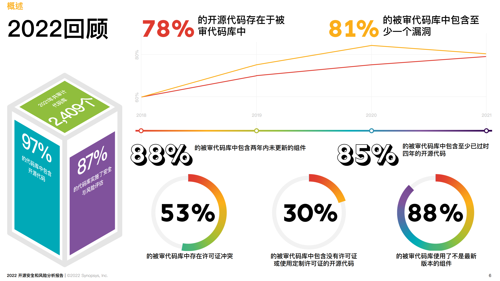
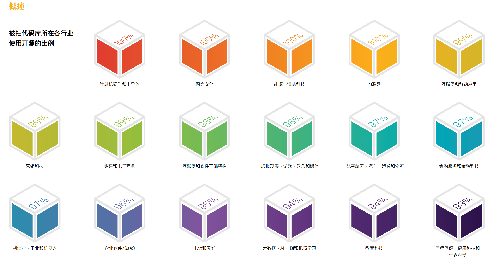
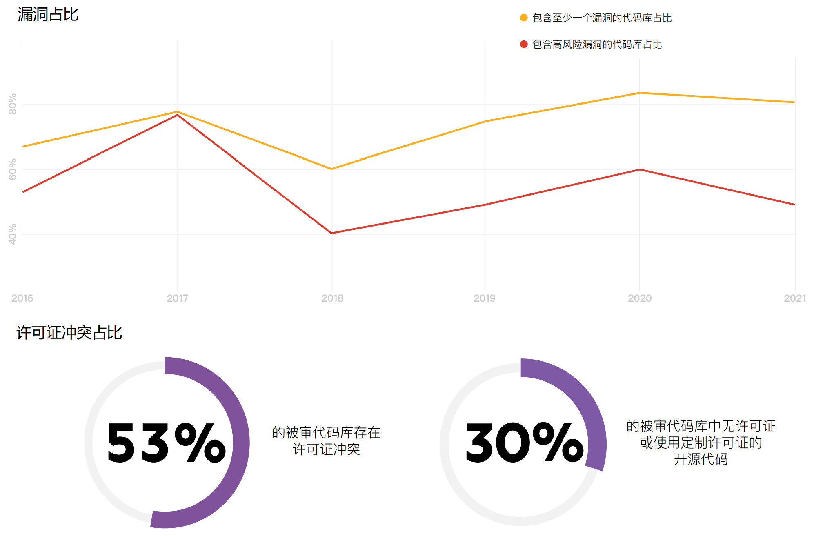

<!DOCTYPE html>
<html lang="en">
  <head>
    <meta charset="utf-8" />
    <meta name="viewport" content="width=device-width, initial-scale=1.0, maximum-scale=1.0, user-scalable=no" />

    <title>reveal-md</title>
    <link rel="shortcut icon" href="./favicon.ico" />
    <link rel="stylesheet" href="./dist/reset.css" />
    <link rel="stylesheet" href="./dist/reveal.css" />
    <link rel="stylesheet" href="./dist/theme/black.css" id="theme" />
    <link rel="stylesheet" href="./css/highlight/base16/zenburn.css" />


  </head>
  <body>
    <div class="reveal">
      <div class="slides"><section  data-markdown><script type="text/template"># 开源生态现状

## 如何了解开源生态的现状

* Github年度报告：[https://octoverse.github.com/](https://octoverse.github.com/)
* RedHat：《企业级开源现状报告》
* Linux基金会：《Open Source Jobs Report》
* Open Source Initiative：《Annual Report》
* 新思科技：《开源安全和风险分析报告》
* 开源社：《中国开源年度报告》
* 信通院：《开源生态白皮书》、《全球开源生态研究报告》
* COPU：《中国开源发展蓝皮书》
* InfoQ：《中国开源发展研究分析》
* iResearch：《中国开源软件产业研究报告》
* OSChina & Gitee：《中国开源开发者报告》

</script></section><section  data-markdown><script type="text/template">
## 开源生态的组成要素

开源生态以**开源项目**为中心建构，包括了**贡献者**组成的**开源社区**，**各行业开源者**，以及**各行业使用者**这五类产业要素，其中**开源商业模式**、**开源社区运营**和**开源风险治理**是生态发展关注的三大环节。



</script></section><section  data-markdown><script type="text/template">
## 全球开源生态发展现状

* GitHub 数据
    * 2020 年报告，托管仓库超过 2 亿，2021 年又新增 6100 万。
    * 用户总数，从 2000 年的 5700 万，增长到 2021 年的 7100 万
* Gitee 数据
    * 2021年，托管的代码仓库超过了 2000 万，⽤户总量超过 800 万



</script></section><section  data-markdown><script type="text/template">
## 重大的并购案例

* 1999 年 Red Hat 收购 Cygnus Solutions（6.75 亿美元）
* 2003 年 Novell 收购SUSE（2.1 亿美元）
* 2005 年 Oracle 收购 InnoDB
* 2006 年 Oracle 收购 SleeepyCat
* 2006 年 Red Hat 收购 JBoss（3.5 亿美元）
* 2007 年 Apple 收购 CUPS
* 2007 年 Sourcefire 收购 ClamAV
* 2007 年 Citrix 收购 XenSource（5 亿美元）
* 2008 年 Sun 收购 MySQL（10 亿美元）
* 2008 年 SpringSource 收购 Covalent Technologies
* 2009 年 Oracle 收购 Sun（74 亿美元）
* 2009 年 VMware 收购 Spring Source（4.2 亿美元）
* 2018 年 Microsoft 收购 GitHub（75 亿美元）
* 2019 年 IBM 收购 Red Hat（340 亿美元）

</script></section><section  data-markdown><script type="text/template">
## 2022年新思科技开源安全和风险分析报告



</script></section><section  data-markdown><script type="text/template">


</script></section><section  data-markdown><script type="text/template">


</script></section><section  data-markdown><script type="text/template">


</script></section><section  data-markdown><script type="text/template">## 繁荣背后的冰山现象

* 一座冰山是“开源项目”，海面之上看得到的开源项目，只是开源世界里的极小部分
    * 海面之下的开源项目，不仅重要，而且是海面上的开源项目，存在的基础
    * 但是，海面之下的开源项目，几乎没有商业价值，也没有投资前景
* 另一种冰山是“开源贡献者”，海面之上的开源开发者，只是开源社区里的一小部分人
    * 他们的确做出了极大的贡献，也因此享受到了“礼物文化”
    * 海面之下的开发者，他们的贡献甚至被忽略了，社区的尊崇地位，几乎与他们无关


</script></section><section  data-markdown><script type="text/template">
## 大缓坡

从趋势来看，开源一直在不断增长。无论是在技术范围的广度，还是技术依赖的深度，还是实际采用的比例，都在不断的增加。

但是，另一方面，我们也发现：采用开源的风险，以及采用开源的成本，都在不断的上升。从收益递减的规律来看，我们也可以说：采用开源的收益的增长幅度正在趋缓，而成本的增长幅度正在上升。因此，开源的整体发展，将逐渐呈现一种大缓坡的趋势。


</script></section><section  data-markdown><script type="text/template">
## 如何解决供应链的隐忧？

开源软件的供应链与一般的供应链，有何区别？传统的供应链，是一级与一级之间，都签了合同的。但是在软件，尤其是开源软件的供应链，每一级之间，都有免责条款。

一方面是供应链的延续性，另一方面是责任链的断裂（免除）。于是，我们就会发现一个实际存在的现象：因为责任链条断裂，所以利益链条也断裂了。

只有将断裂的责任链、利益链重新连接起来，开源软件的供应链才有可能变得健康。开源生态，才能迎来新一轮的繁荣。</script></section></div>
    </div>

    <script src="./dist/reveal.js"></script>

    <script src="./plugin/markdown/markdown.js"></script>
    <script src="./plugin/highlight/highlight.js"></script>
    <script src="./plugin/zoom/zoom.js"></script>
    <script src="./plugin/notes/notes.js"></script>
    <script src="./plugin/math/math.js"></script>
    <script>
      function extend() {
        var target = {};
        for (var i = 0; i < arguments.length; i++) {
          var source = arguments[i];
          for (var key in source) {
            if (source.hasOwnProperty(key)) {
              target[key] = source[key];
            }
          }
        }
        return target;
      }

      // default options to init reveal.js
      var defaultOptions = {
        controls: true,
        progress: true,
        history: true,
        center: true,
        transition: 'default', // none/fade/slide/convex/concave/zoom
        plugins: [
          RevealMarkdown,
          RevealHighlight,
          RevealZoom,
          RevealNotes,
          RevealMath
        ]
      };

      // options from URL query string
      var queryOptions = Reveal().getQueryHash() || {};

      var options = extend(defaultOptions, {}, queryOptions);
    </script>


    <script>
      Reveal.initialize(options);
    </script>
  </body>
</html>
